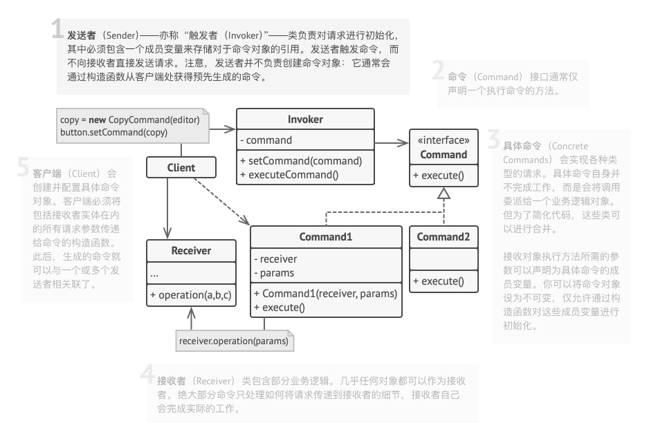
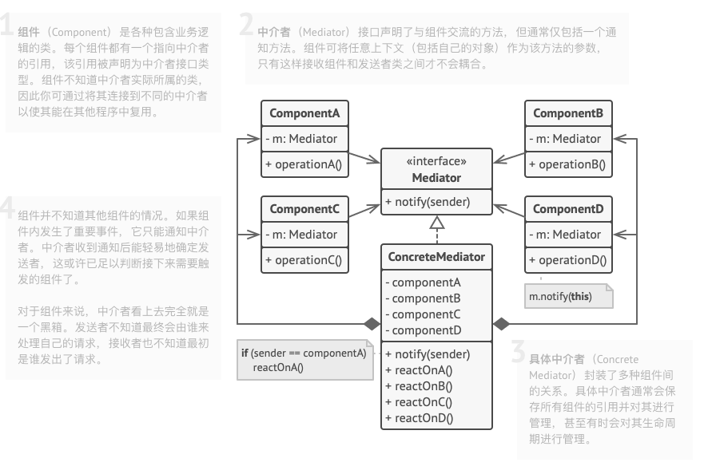
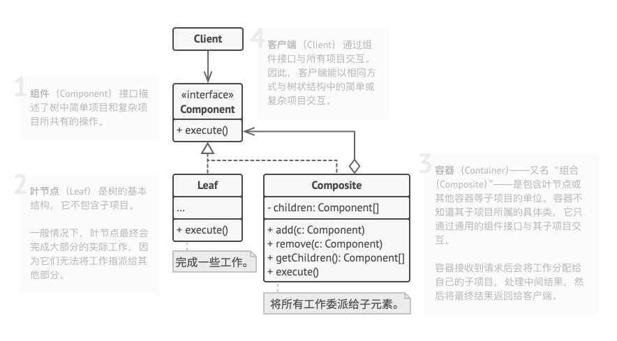

前言 Hi Coder，我是 CoderStar！
今天主要给大家分享的内容是三种设计模式 (命令模式 、中介者模式 以及组合模式 ) 及其它们在AppDelegate解耦场景下的应用，特别是组合模式，沉淀出相应的轮子分享给大家。
同时也给大家说下后面关于设计模式系列的文章计划，因为设计模式相关文章会结合我们开发中实际上会遇到的场景进行整理，所以发文可能不连续，希望大家理解，我会将大部分设计模式的代码示例全部整理到DesignPatternsDemo 仓库中，形式为Playground，所以代码示例中可能会有一些手动调用系统函数的情况出现。
同时给大家推荐一个学习设计模式的好网站—深入设计模式 ，文章中涉及的部分UML图也来自该网站。
场景 AppDelegate 是应用程序的根对象，即唯一代理，可以认为是每个 iOS 项目的核心。
其提供应用程序生命周期事件的暴露；
其确保应用程序与系统以及其他应用程序正确的交互；
其通常承担很多职责，这使得很难进行更改，扩展和测试。
随着业务的迭代升级，不断增加新的功能和业务，AppDelegate中的代码量也不断增长，致使其 Massive。AppDelegate中常见的业务会包括：
生命周期中的事件处理及传播；
管理 UI 堆栈配置：选择初始视图控制器，执行根视图控制器转换；
管理后台任务；
管理通知；
三方库初始化；
管理设备方向；
设置 UIAppearance；
…
并且因为AppDelegate会影响整个 APP，所以在面对复杂的AppDelegate时，我们就会小心翼翼，生怕自己自己的改动影响到其他的功能。所以说 AppDelegate 的简洁和清晰对于健康的 iOS 架构来说是至关重要的。
下面我们利用上述三种设计模式实现对AppDelegate的解耦，使其优雅。
命令模式 命令模式（Command） 是一种 行为设计模式 ，它可将请求转换为一个包含与请求相关的所有信息的独立对象。该转换让你能根据不同的请求将方法参数化、延迟请求执行或将其放入队列中，且能实现可撤销操作。
UML

实现方式
声明仅有一个执行方法 的命令接口。
抽取请求并使之成为实现命令接口的具体命令类。每个类都必须有一组成员变量来保存请求参数和对于实际接收者对象的引用。所有这些变量的数值都必须通过命令构造函数进行初始化。
找到担任发送者职责的类。 在这些类中添加保存命令的成员变量。发送者只能通过命令接口与其命令进行交互。发送者自身通常并不创建命令对象，而是通过客户端代码获取。
修改发送者使其执行命令，而非直接将请求发送给接收者。 客户端必须按照以下顺序来初始化对象：
创建接收者。
创建命令，如有需要可将其关联至接收者。
创建发送者并将其与特定命令关联。
代码示例 1 2 3 4 5 6 7 8 9 10 11 12 13 14 15 16 17 18 19 20 21 22 23 24 25 26 27 28 29 30 31 32 33 34 35 36 37 38 39 40 41 42 43 44 45 46 47 48 49 50 51 52 53 54 55 56 57 58 59 60 61 import UIKitprotocol AppDelegateDidFinishLaunchingCommand func execute () } struct InitializeThirdPartiesCommand : AppDelegateDidFinishLaunchingCommand func execute () print ("InitializeThirdPartiesCommand 触发" ) } } struct InitialViewControllerCommand : AppDelegateDidFinishLaunchingCommand let keyWindow: UIWindow func execute () print ("InitialViewControllerCommand 触发" ) keyWindow.rootViewController = UIViewController () } } final class AppDelegateCommandsBuilder private var window: UIWindow! func setKeyWindow (_ window: UIWindow) AppDelegateCommandsBuilder { self .window = window return self } func build () AppDelegateDidFinishLaunchingCommand ] { return [ InitializeThirdPartiesCommand (), InitialViewControllerCommand (keyWindow: window), ] } } class AppDelegate : UIResponder , UIApplicationDelegate var window: UIWindow? func application (_ application: UIApplication, didFinishLaunchingWithOptions launchOptions: [UIApplication.LaunchOptionsKey: Any ]?) Bool { window = UIWindow () AppDelegateCommandsBuilder () .setKeyWindow(window!) .build() .forEach { $0 .execute() } return true } } AppDelegate ().application(UIApplication .shared, didFinishLaunchingWithOptions: nil )
其实上述改造并不是完全严格遵循的命令模式，比如没有接收者角色，发送者和客户端实际上并没有完全分离开，同时AppDelegateCommandsBuilder实际上是一种建造者模式，这种模式其实也比较常用，后续也会对这种模式进行单独讲解。如果想看角色完整的命令模式代码示例，可见command代码示例 。
使用命令模式改造AppDelegate后，当我们需要在回调中增加处理逻辑时，我们无需再修改AppDelegate，而是直接增加相应的Command类，并且在AppDelegateCommandsBuilder添加上去即可。
那这种方式的弊端想必大家可以很明显的看出来，上述代码示例只是把didFinishLaunch方法进行了解耦，对其他方法并没有进行改造，如果对其他方法进行改造，也需要实现上述一套，会有些冗余。
中介者模式 中介者模式（Mediator） 是一种 行为设计模式 ，能让你减少对象之间混乱无序的依赖关系。该模式会限制对象之间的直接交互， 迫使它们通过一个中介者对象进行合作。
其实开发者对于中介者模式应该是非常熟悉，因为 MVC 模式中，C 就是一个典型的中介者，其限制了 M 与 V 之间的直接交互。
UML

代码示例 1 2 3 4 5 6 7 8 9 10 11 12 13 14 15 16 17 18 19 20 21 22 23 24 25 26 27 28 29 30 31 32 33 34 35 36 37 38 39 40 41 42 43 44 45 46 47 48 49 50 51 52 53 54 55 56 57 58 59 60 61 62 63 64 65 66 67 68 69 70 71 72 73 74 75 76 77 78 79 80 import UIKitprotocol AppLifecycleListener func onAppWillEnterForeground () func onAppDidEnterBackground () func onAppDidFinishLaunching () } extension AppLifecycleListener func onAppWillEnterForeground () func onAppDidEnterBackground () func onAppDidFinishLaunching () } class AppLifecycleListenerImp1 : AppLifecycleListener func onAppDidEnterBackground () } } class AppLifecycleListenerImp2 : AppLifecycleListener func onAppDidEnterBackground () } } class AppLifecycleMediator : NSObject private let listeners: [AppLifecycleListener ] init (listeners: [AppLifecycleListener ]) { self .listeners = listeners super .init () subscribe() } deinit { NotificationCenter .default .removeObserver(self ) } private func subscribe () NotificationCenter .default .addObserver(self , selector: #selector(onAppWillEnterForeground), name: UIApplication .willEnterForegroundNotification, object: nil ) NotificationCenter .default .addObserver(self , selector: #selector(onAppDidEnterBackground), name: UIApplication .didEnterBackgroundNotification, object: nil ) NotificationCenter .default .addObserver(self , selector: #selector(onAppDidFinishLaunching), name: UIApplication .didFinishLaunchingNotification, object: nil ) } @objc private func onAppWillEnterForeground () listeners.forEach { $0 .onAppWillEnterForeground() } } @objc private func onAppDidEnterBackground () listeners.forEach { $0 .onAppDidEnterBackground() } } @objc private func onAppDidFinishLaunching () listeners.forEach { $0 .onAppDidFinishLaunching() } } public static func makeDefaultMediator () AppLifecycleMediator { let listener1 = AppLifecycleListenerImp1 () let listener2 = AppLifecycleListenerImp2 () return AppLifecycleMediator (listeners: [listener1, listener2]) } } class AppDelegate : UIResponder , UIApplicationDelegate var window: UIWindow? let mediator = AppLifecycleMediator .makeDefaultMediator() func application (_ application: UIApplication, didFinishLaunchingWithOptions launchOptions: [UIApplication.LaunchOptionsKey: Any ]?) Bool { return true } }
可以看到上面AppLifecycleMediator很明显是一个中介者，生命周期事件通过其得以传播给具体的使用者。
其实中介者模式在组件化通信方案中也比较常用，后面有时间会给大家介绍一下，如果大家有兴趣也可以自己去了解一下，也就是我们常说的CTMediator方案。
组合模式 组合模式 是一种 结构型设计模式 ，你可以使用它将对象组合成树状结构，并且能像使用独立对象一样使用它们。
UML

类比到AppDelegate场景下，AppDelegate是一个根Composite角色，而各个业务便是Leaf角色，如果应用到组件化中，则各个组件便是Leaf角色或者Composite角色（组件内部可再分发到各个业务Leaf）。
代码示例 1 2 3 4 5 6 7 8 9 10 11 12 13 14 15 16 17 18 19 20 21 22 23 24 25 26 27 28 29 30 31 32 33 34 35 36 37 38 39 40 41 42 43 44 45 46 47 48 49 50 51 52 53 54 55 56 57 58 59 60 61 62 63 64 65 66 67 68 69 70 71 72 73 74 75 76 77 78 79 80 81 82 83 84 85 86 87 88 89 90 91 92 93 94 95 96 97 98 99 100 101 102 103 104 105 106 107 public protocol ApplicationService : UIApplicationDelegate , UNUserNotificationCenterDelegate extension ApplicationService public var window: UIWindow? { return UIApplication .shared.delegate?.window ?? nil } } open class ApplicationServiceManagerDelegate : UIResponder , UIApplicationDelegate public var window: UIWindow? open var plistPath: String? { return nil } open var services: [ApplicationService ] { guard let path = plistPath else { return [] } guard let applicationServiceNameArr = NSArray (contentsOfFile: path) else { return [] } var applicationServiceArr = [ApplicationService ]() for applicationServiceName in applicationServiceNameArr { if let applicationServiceNameStr = applicationServiceName as ? String , let applicationService = NSClassFromString (applicationServiceNameStr), let module = applicationService as ? NSObject .Type { let service = module.init () if let result = service as ? ApplicationService { applicationServiceArr.append(result) } } } return applicationServiceArr } public func getService (by type: ApplicationService.Type ) ApplicationService? { for service in applicationServices where service.isMember(of: type) { return service } return nil } private lazy var applicationServices: [ApplicationService ] = { self .services }() } extension ApplicationServiceManagerDelegate @available (iOS 3.0 , *) open func application (_ application: UIApplication, didFinishLaunchingWithOptions launchOptions: [UIApplication.LaunchOptionsKey: Any ]? = nil ) Bool { var result = false for service in applicationServices { if service.application?(application, didFinishLaunchingWithOptions: launchOptions) ?? false { result = true } } return result } } final class AppThemeApplicationService : NSObject , ApplicationService func application (_ application: UIApplication, didFinishLaunchingWithOptions launchOptions: [UIApplication.LaunchOptionsKey: Any ]? = nil ) Bool { return true } } final class AppConfigApplicationService : NSObject , ApplicationService func application (_ application: UIApplication, didFinishLaunchingWithOptions launchOptions: [UIApplication.LaunchOptionsKey: Any ]? = nil ) Bool { return true } } @UIApplicationMain class AppDelegate : ApplicationServiceManagerDelegate override var services: [ApplicationService ] { return [ AppConfigApplicationService (), AppThemeApplicationService (), ] } override init () { super .init () if window == nil { window = UIWindow () } } }
从上述代码示例我们可以看出每个Leaf实现了ApplicationService协议，其可以拿到原本AppDelegate能拿到的所有回调。
对于AppDelegate而言，其内部不会再有任何业务上的逻辑，并且因为协议的默认实现，已经将任务默认分发到各个Leaf中，其剩余的任务仅仅就是提供Leaf列表，并且考虑到在组件化环境中的使用，不直接引用各Leaf，提供了plist配置文件的形式。
对该套解耦方案进行完善，沉淀出的轮子地址为ApplicationServiceManager 。功能比较轻量级，欢迎大家使用。
关于AppDelegate的解耦其实还有阿里的BeeHive ，不过其是一个综合的组件化方案，AppDelegate的事件分发只是其一部分。
最后 上述的三种设计模式可以根据各自项目的实际情况进行选用或者组合，比如说壳工程将事件分发到各组件内部可以选用组合模式，组件内部的事件分发可以选用命令或者中介者模式。
要更加努力呀！
Let’s be CoderStar!
参考资料